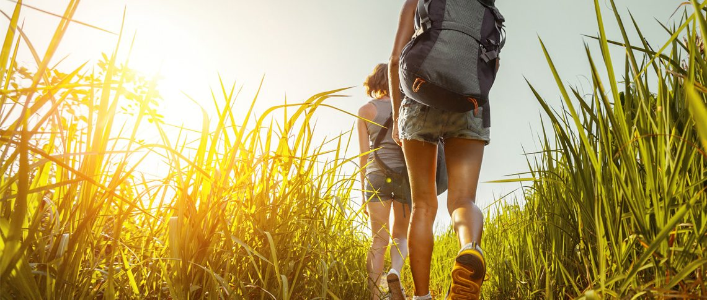

TURISMO ACTIVO
Este tipo de turismo realizado en Popayán, ofrece un conjunto de actividades deportivas de gran nivel. La ciudad cuenta con infraestructura adecuada y grandes servicios para el turista y el deportista, estas actividades son realizadas en establecimientos con todo el confort para los participantes; permiten mejorar la salud y conectarse con el medio ambiente al mismo tiempo.

Beneficios:
El turismo activo en Popayán cuenta con el siguiente beneficio: